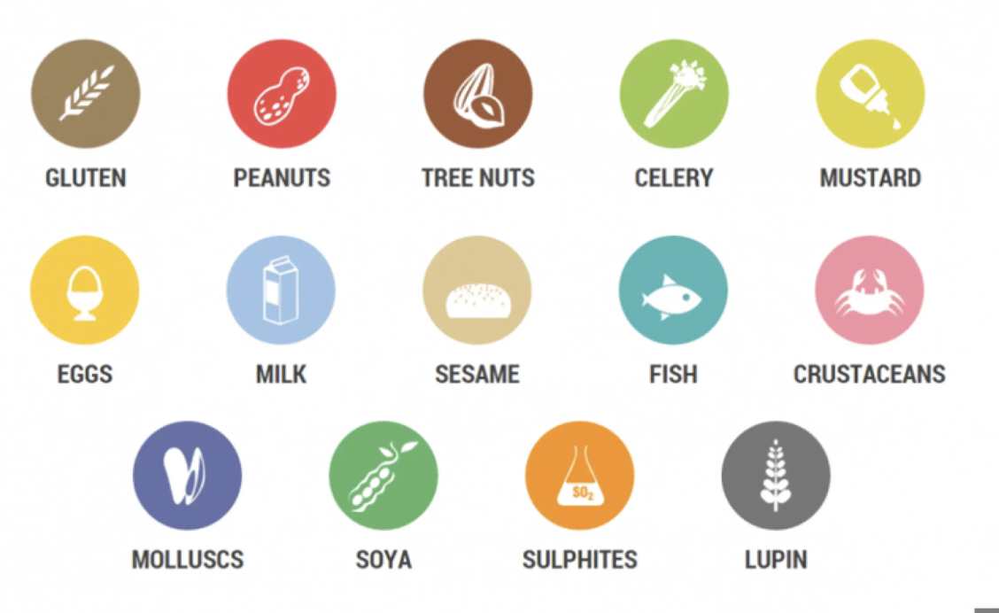

Datasets & Training Data
Understanding the critical role of datasets in building accessible food label readers
Why Datasets Matter
💡 Hover over each card to see sample images from the datasets
1. Nutrition Label Images
Dataset of food packaging focused on nutrition facts tables.
Achievement: Helped test bounding-box OCR pipelines, improving recognition of calories, sugar, and fat.

2. Expiration Date Images
Photos of product packages with date stamps.
Key challenge: Format variation ("06/25", "Best before June 2025").
Discovery: Dataset showed OCR alone often failed → combining with LLMs improved interpretation.

3. Allergen Ingredient Lists
Collected ingredient lists with allergens like milk, soy, and nuts.
Method: Paired with OCR output + keyword matching for allergen detection.
